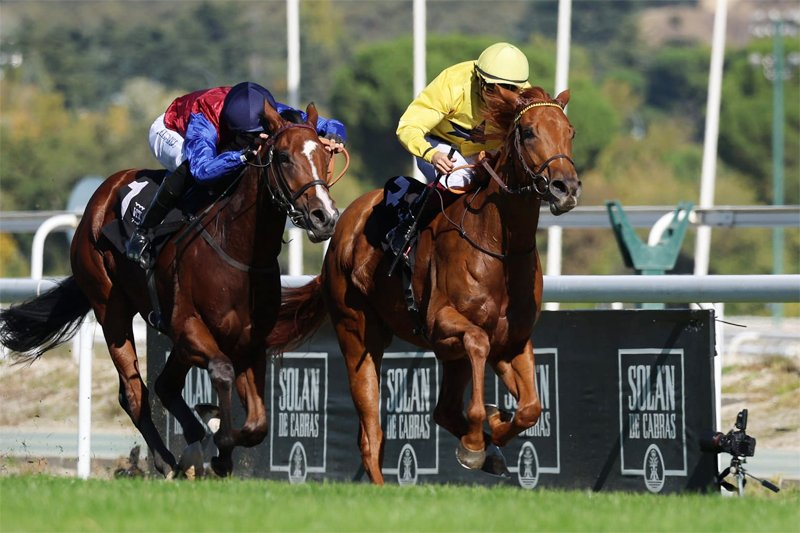

J. GELABERT encabeza el balance del cuarto trimestre del turf de España con 7 victorias
J. GELABERT encabeza la clasificación de jockeys del turf de España en el cuarto trimestre de 2026 (octubre-diciembre) con 7 victorias en 20 montas (35.0% de acierto) y 10 podios, por delante de V. JANACEK (3) y R.N. VALLE (2). En el apartado de entrenadores lidera G.ARIZKORRETA (10 victoria

Jockeys
| Jockey | Vict. | Podios | Montas | % | Premio € |
|---|---|---|---|---|---|
| J. GELABERT | 7 | 10 | 20 | 35.0 | 120.920 |
| V. JANACEK | 3 | 11 | 20 | 15.0 | 54.140 |
| R.N. VALLE | 2 | 6 | 18 | 11.1 | 36.345 |
| B. FAYOS | 1 | 3 | 12 | 8.3 | 33.800 |
| A. GUTIERREZ V. | 1 | 3 | 7 | 14.3 | 14.000 |
| H. CROUCH | 1 | 3 | 4 | 25.0 | 18.700 |
| D. SIKOROVA | 1 | 2 | 7 | 14.3 | 25.800 |
| S. LE QUILLEUC | 1 | 2 | 6 | 16.7 | 20.500 |
| V. JANACEK (56) | 1 | 1 | 4 | 25.0 | 10.800 |
| C. CADEL | 1 | 1 | 3 | 33.3 | 4.500 |
Entrenadores
| Entrenador | Vict. | Podios | Montas | % | Premio € |
|---|---|---|---|---|---|
| G.ARIZKORRETA | 10 | 21 | 39 | 25.6 | 173.945 |
| A.SOTO | 3 | 6 | 15 | 20.0 | 60.750 |
| CH.DELCHER | 2 | 8 | 24 | 8.3 | 32.210 |
| O.ANAYA | 1 | 6 | 17 | 5.9 | 42.875 |
| J.M.OSORIO | 1 | 5 | 9 | 11.1 | 18.300 |
| M.ALONSO R. | 1 | 4 | 7 | 14.3 | 30.000 |
| J.LOPEZ | 1 | 4 | 6 | 16.7 | 15.600 |
| F.JIMENEZ | 1 | 3 | 5 | 20.0 | 10.800 |
| J.C.ROSELL | 1 | 2 | 6 | 16.7 | 8.000 |
| R.MAROTO | 1 | 1 | 6 | 16.7 | 4.500 |
Cuadras
| Propietario | Vict. | Podios | Montas | % | Premio € |
|---|---|---|---|---|---|
| MEDITERRANEO | 4 | 8 | 17 | 23.5 | 83.700 |
| YEGUADA ROCIO | 2 | 6 | 14 | 14.3 | 30.700 |
| SAN JOSE | 2 | 3 | 7 | 28.6 | 47.450 |
| LA FAMILIA RACING | 1 | 2 | 2 | 50.0 | 9.000 |
| PELIGROSA | 1 | 2 | 2 | 50.0 | 12.600 |
| REZA PAZOOKI | 1 | 1 | 4 | 25.0 | 28.450 |
| YEGUADA AGF | 1 | 1 | 4 | 25.0 | 22.345 |
| ALEX Y SOFIA | 1 | 1 | 3 | 33.3 | 6.500 |
| JAVIER MALDONADO TRINCHANT | 1 | 1 | 3 | 33.3 | 24.000 |
| LA TOLEDANA | 1 | 1 | 3 | 33.3 | 8.000 |
Estadística de elaboración propia a partir de nuestra base de datos de resultados.
Fichas: G. Arizkorreta (jinete) · J. Gelabert (jinete) · G.Arizkorreta (preparador)
Por Martín Larrañeta